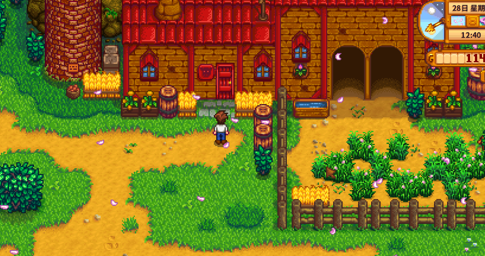
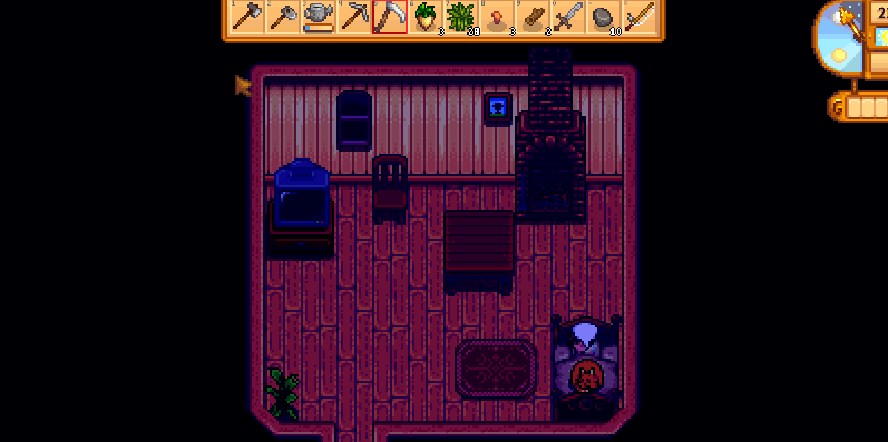

Quick answers (read this first)
- Animals need a coop or barn from Robin before Marnie will sell you livestock that needs housing.
- Marnie’s ranch is in Cindersap Forest (south of the farm)—red roof landmark.
- Pet animals daily; keep them fed/housed for happier products.
- Week-one chickens are optional—crops still pay the bills early.
- Hay and silo planning matter once you commit; start small.
Who this is for
Use this if you want animals but keep going broke, or you found Marnie’s ranch and do not know the order of operations. Many new players walk south, see cute chickens, and buy livestock before Robin finishes a coop. The game expects housing first, animals second—a sequence that saves gold and morning sanity.
Version note: Stardew Valley 1.6 keeps the Robin-then-Marnie pipeline with quality-of-life tweaks elsewhere. Check in-game prices at Marnie’s counter before buying; this guide focuses on timing and daily habits, not exact animal costs.
Pros & cons of early animals
| Details | |
|---|---|
| Pros | Mayonnaise and cheese routes later; friendship with animals; farm feels alive; bundle items eventually. |
| Cons | Gold and wood upfront; daily petting and feeding; winter hay stress if unprepared; more morning steps before mines. |
| Use when | Watering is easy and gold is comfortable enough to absorb a bad week. |
| Skip when | You still faint weekly and cannot afford seeds. |
Robin first, Marnie second
Robin builds the physical coop or barn on your farm. Marnie sells the animals that live inside. Until housing exists, focus on crops, mines, and the free pet you already have at home. Livestock is a mid-game comfort layer for many saves, not a week-one requirement.
Many new players treat Marnie’s ranch like a pet store you can rush. Instead, visit once to learn the location, then return when Robin’s build timer finishes and your morning routine has empty space for feeding and petting.
Interactive checklist
Safe to skip (anti-FOMO)
- Animals before backpack or watering-can upgrades if those hurt more.
- Filling every animal slot in Summer week one.
- Buying a barn before you enjoy coop chores.
- Panic-buying hay from Marnie every day instead of planning grass and silo space.
Decision table
| Ready? | Next step | Wait if… |
|---|---|---|
| Crop mornings easy | Robin coop | Gold needed for seeds |
| Coop built | One chicken from Marnie | You dislike daily pets |
| Happy with chickens | Consider barn later | Winter hay unsolved |
Daily animal routine table
| Chore | When | Skip consequence |
|---|---|---|
| Pet each animal | Morning farm pass | Lower mood and product quality over time |
| Collect eggs/milk | After petting | Missed products sit until collected |
| Check hay feeder | When animals are inside | Empty feeder means unhappy livestock |
| Door open/close | Weather-dependent | Animals need access to grass when safe |
Winter prep table
| Before winter | Why | Year 1 habit |
|---|---|---|
| Silo with hay stored | Grass stops growing | Build silo when coop is planned, not in Winter day one |
| Know Marnie’s hay price | Emergency top-ups | Budget a little gold, avoid daily panic buys |
| Smaller flock | Less hay burn | One or two animals teach the loop |
Real screenshots

Game screenshot © ConcernedApe — used for guide commentary

Game screenshot © ConcernedApe — used for guide commentary

Game screenshot © ConcernedApe — used for guide commentary
Operations
Eight steps from “I want chickens” to a sustainable animal routine that does not wreck Year 1 crop progress.
- Stabilize crop mornings. Watering, shipping, and energy should feel boring before adding livestock chores.
- Visit Marnie’s ranch once to learn the path. South through Cindersap Forest—red roof landmark near Leah’s area.
- Order a coop from Robin with wood and gold budgeted. Wait out construction days; keep farming while she builds.
- Consider a silo in the same general plan. Hay storage matters before winter, not after the first snow.
- Buy one animal from Marnie during shop hours. One chicken teaches the loop; a full barn does not.
- Pet every animal each morning before leaving the farm. Pair with egg collection so it becomes one lap.
- Manage doors and grass access. Open when you want grazing; close during storms or when you prefer them inside—learn what fits your schedule.
- Expand only if mornings still feel calm. Second animal, then barn talk—never outpace your energy bar.
Alternative variations
The animal lover
Some players accept tighter seed budgets to rush a coop because ranch content is why they bought the game. If that is you, build silo space early, keep the flock small until hay feels automatic, and skip guilt about not min-maxing crops.
The crop purist
Others delay all livestock until Year 2 when sprinklers and gold make mornings short. They buy bundle animal products from the cart or friends when needed. Your farm pet still gives companionship—Marnie can wait.
Common mistakes
- Animals before housing. Marnie sells livestock that needs a coop or barn Robin must build first. Buying early wastes the trip.
- Ignoring petting then wondering why mood is low. Daily pets are part of the product loop, not optional flavor.
- Draining seed money for a full barn. One chicken proves you enjoy the chores before you commit to bigger buildings.
- Forgetting hay before winter. Many new players discover grass does not grow in winter the hard way. Plan silo storage while it is still Fall.
- Leaving building doors wrong for the weather. Animals need sensible inside/outside access; learn the habit early instead of fixing mood problems later.
FAQ
Where is Marnie?
Cindersap Forest south of your farm—ranch with a red roof. Walk south from the farm path and look for her shop building.
Do I need animals for Community Center?
Some bundles ask for animal products later. You can still progress Pantry and other rooms first; buy or produce those items when a bundle actually needs them.
Coop or barn first?
Coop is smaller and teaches the daily loop. Barn comes when you want larger animals and accept more chores.
Can I sell animals I regret buying?
You can manage flock size through Marnie’s shop options once you learn the system. Starting with one animal reduces regret costs.
Does my free pet replace a coop?
No. Your cat or dog is companionship only. Chickens and cows need Robin’s buildings and Marnie’s purchases.
Related
Unofficial fan guide. Not affiliated with ConcernedApe or the original developers of Stardew Valley.